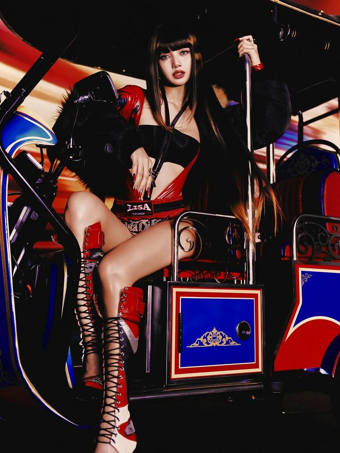

SEATTLE FAN RADAR · PDT
十月追星，把舞台穿回日常。
把巡演、官宣回归和女团舞台穿搭灵感放在一个地方。日期均按西雅图时间显示；来源缺口会直接标出来。
--.--最后更新
西雅图巡演
票价不是秒级实时：每周一、周四实查官方票与转售票，保留查询时间与费用口径。每场可一键加到 Outlook 日历；开票时间已核实的场次可设开票提醒。
没有符合当前条件的巡演。
官宣回归
仅收录研究快照中已核实的发行。
没有符合当前条件的回归。
舞台回顾
来不及追直播时从这里往回翻：过去一个月的舞台 + 过去三个月很火的舞台，都按新到旧排。
没有符合搜索的舞台，换个歌手或歌名试试。
偶像衣橱
选一本，左右滑着看；同一回归期有几张合格造型图就放几张。
滑动浏览：图片左右滑、键盘方向键或下方按钮都能翻页。尽量保留完整造型；只有局部或近景素材的组会直接标明，不拿裁切图冒充全身照。穿搭根据公开舞台、MV 与媒体报道整理，未公开品牌的不写品牌。
11 LOOKBOOKS · SWIPE EDITION
十月造型翻阅室
每张独立照片占一页，不用裁切重复凑页；标题会标明全身、群像或局部素材。
没有符合当前条件的穿搭灵感。